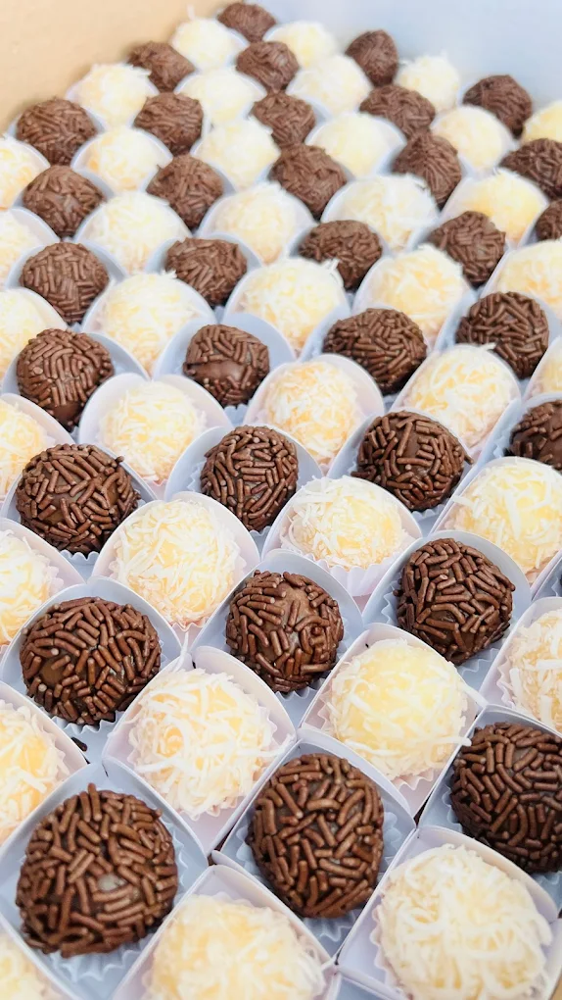
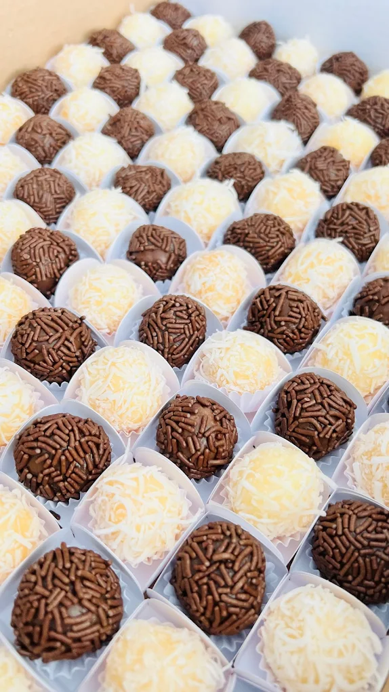
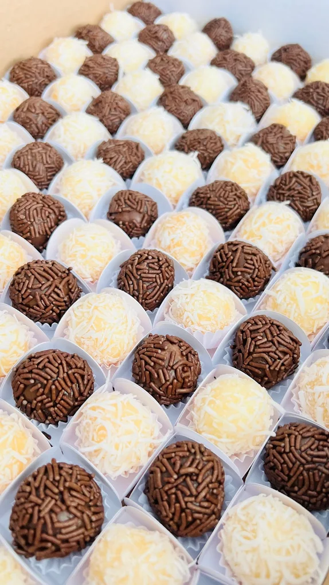

Na Sinhorini Doceria, a gente acredita que a vida fica mais doce com um pedaço de bolo e um sorriso no rosto!
começou com uma paixão açucarada e um cheirinho de bolo quentinho saindo do forno. Misturamos amor, carinho e uma pitada
de ousadia para transformar receitas de família em experiências que derretem corações.
Aqui cada brigadeiro conta uma história, cada torta é feita com emoção e cada fatia de bolo carrega o nosso jeitinho especial de celebrar a vida.
movidos por açúcar, afeto e aquela vontade incontrolável de ver os olhos brilhando a cada mordida.
para comemorar, consolar ou só porque deu vontade, nossos doces estão aqui pra tornar o seu dia mais gostoso.
Sinhorini é mais do que uma doceria: é um pedacinho de aconchego, onde cada receita tem alma e cada cliente vira parte da nossa família.
ado√ßar a vida com a gente! üíï‚ú®
